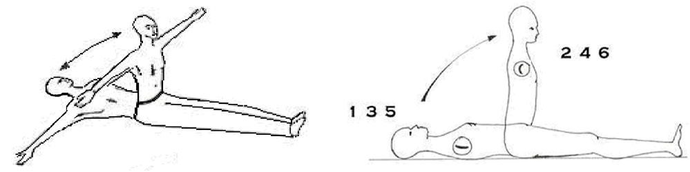

Conferência nº 13
LEIS DE KARMA E DHARMA
A Lei de Karma é uma Lei Universal, cobrada pela Justiça Objetiva. A Lei do Karma se a conhece com os seguintes termos:
- Lei de Recorrência (tudo volta a ocorrer, com suas consequências).
- Lei do Talião (olho por olho e dente por dente).
- Lei de Causa e Efeito (não existe causa sem efeito e nem efeito sem causa).
- Lei de Igualdade (do que se dá, se recebe).
Quando refletimos em algo aprendemos disso. Quando fazemos certas coisas que não vemos tão mal como quando fazem à nós. Por isso dizemos que a Lei do Karma é o Fundamento desta Escola e de todo o aprendizado. Refletir no que nos devolvem por nossas ações fará com que compreendamos finalmente.
O que é Karma?
O Karma é o que fazemos ou temos que pagar pelas más obras que fazemos quando deixamos atuar os defeitos em vez da Consciência. Para pagar o Karma se nos dá tempo, porém não há divida que não se pague e nem prazo que não se cumpra.
Devemos o Karma de sete existências e o dia que queiramos nos Auto-Realizar teremos que pagá-lo à vista em uma só existência.
O que é Dharma?
O Dharma é o dinheiro cósmico que recebemos por cada obra boa ou consciente que fazemos. Este dinheiro cósmico o recebemos em um pequeno caneco, que se encontra no Tribunal do Karma, onde todos os Seres nos pagam imediatamente as obras conscientes que fazemos. Todo esse dinheiro cósmico é transladado diariamente ao Banco do Dharma. A diferença do Karma, podemos armazenar Dharma de muitíssimas existências e pela falta de Consciência não sabemos utilizar.
O que é o Tribunal do Karma?
O Tribunal da Justiça Objetiva está formado por muitos lugares onde se processa a Lei Divina. Em cada nível de Consciência encontramos diferentes Tribunais, por exemplo:
No mundo das 48 Leis encontramos ao Anúbis e seus 42 Juízes, que manejam as 48 Leis do mundo físico, representadas em cada uma das células do corpo humano, nos 48 cromossomas.
Em cada um dos centros da máquina humana encontramos Tribunais de Justiça que manejam as Leis de cada dimensão.
No centro sexual, por exemplo, encontramos o Grande Tribunal. Nele podemos ver como cada um de nossos eus é eliminado, e como se negocia a liberação da consciência de cada um deles, e os compromissos que cada uma dessas chispas adquire. Podemos ver também a capacidade de compromisso de cada Ser.
O que produz Karma?
Produzem Karma as obras, as palavras e as omissões. Porém devemos observar que nossos pensamentos e sentimentos são a origem das nossas obras e palavras.
Classes de Karma:
- Karma Individual: O de cada uma das pessoas;
- Karma Familiar: O de uma família (reúnem pessoas com contas entre si);
- Karma Coletivo: O de pessoas afetadas pela mesma dívida (acidentes, atentados);
- Karma Regional: O de uma região geográfica determinada (secas, epidemias, etc.);
- Karma Nacional: O de qualquer dos países (guerras civis, ditaduras, etc.);
- Karma Continental: O dos continentes (África, América, etc.);
- Karma Mundial: O de toda a humanidade (uma guerra mundial, uma epidemia mundial);
- Karma Planetário: O de um planeta (transformações ambientais, colisão cometas, etc);
- Karma Saya: Ligues astrais entre homens e mulheres pelos coitos realizados;
- Karma Yoga: Perda do cônjuge quando mais se necessita (causada pelo karma saya);
- Karma Duro: Dívidas pelos delitos contra o Espírito Santo (dores e doenças);
- Karma Katancia: É o karma dos Deuses pelos seus erros.
Formas de pagar o karma:
Há cinco formas de pagar o Karma para as pessoas que tem o Conhecimento Objetivo:
- Com Dharma ou Dinheiro Cósmico (o que temos e o que juntamos).
- Com Dor Negociável (não negociou podendo ter negociado).
- Com Dor Não Negociável (delitos contra o Espírito Santo que não se pode negociar).
- Com Caridade (ao Leão da Lei se o domina com a Caridade, ajudando aos demais).
- Com Negócios Objetivos com a Lei (comprometendo-nos).
PRÁTICA DE TRASLADO DE FUNDOS

Se pede ao Pai que seja Ele quem traslade os fundos do Banco do Dharma ao Banco do Karma.
- De pé com os pés juntos, se levantam os braços horizontalmente formando uma cruz com o tronco. As palmas das mãos voltadas para cima.
- O braço direito sobe à 45 graus, ao mesmo tempo em que o braço esquerdo desce à 45 graus.
- Logo o braço esquerdo sobe e o direito desce à 45 graus. Ao longo deste processo se pronuncia o mantra NI alongado.
- Finalmente, enquanto ainda se continua mantralizando, os braços devem terminar horizontalmente.
- Logo se toma ar e se mantraliza ordenadamente, com o mesmo tipo de movimentos, NE, logo NO, depois NU e finalmente NA.
- Este procedimento se repete oito vezes mais.
- Para finalizar se cruzam os braços sobre o peito, o braço direito sobre o esquerdo, e se mantraliza TORN alongando cada letra.
Cada mantra se pronuncia concentrado nos seguintes pontos:
NI: na glabela
NE: na laringe
NO: no coração
NU: no umbigo
NA: no baixo ventre (entre a pélvis e o umbigo)
PRÁTICA DE NEGÓCIOS COM A LEI
1 - O praticante se deita no chão com os braços abertos em cruz, os pés unidos. Nesta posição se pede ao Pai assim:
“Meu Pai, meu Senhor, meu Deus. Rogo-te se é Tua vontade, dirija-te ao Templo Coração da Justiça Divina. Uma vez aí, negocia com Anúbis e seus 42 Juízes da Lei para que...” (plantear o negócio).
Exemplo: “que me deem força para o trabalho de Nascimento Místico, a Morte Psicológica e o Sacrifício pela Humanidade”, ou o negócio que seja.
2 - Logo levantamos o tronco, ficando sentados, mantendo os pés juntos e os braços abertos em cruz e repetimos a oração novamente.
3, 4, 5 e 6 - Desta forma subimos e descemos sucessivamente até completar seis vezes.
- Ao final agradecemos ao Pai e lhe dizemos que nos permita recordar o resultado da negociação.
Nota: a pessoa pode propôr como pagar e em todo caso deve cumprir. Estas duas práticas devem ser feitas todos os dias.